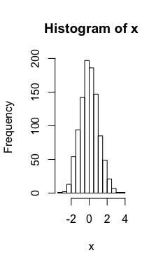
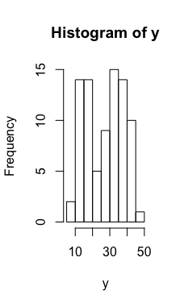
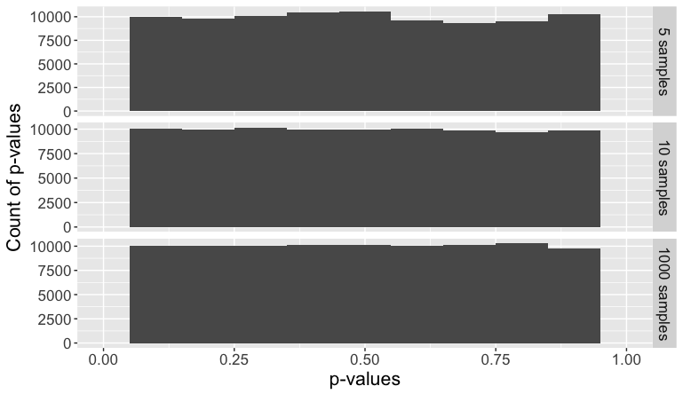
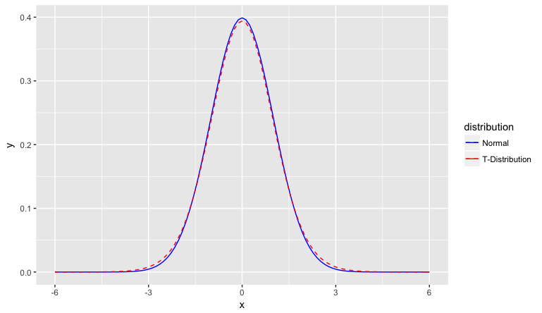
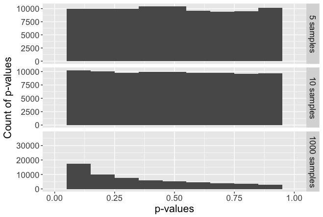
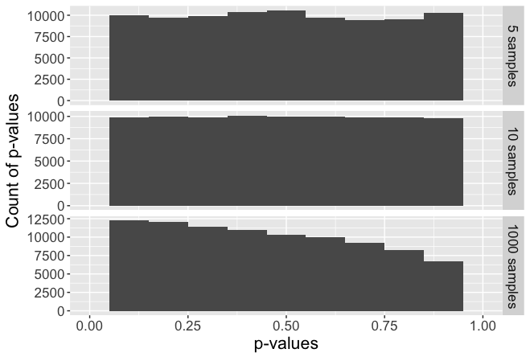
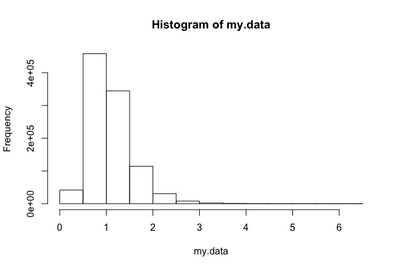
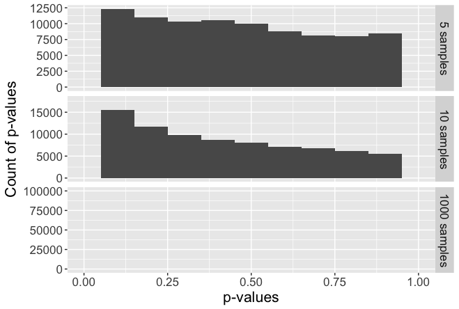

<!DOCTYPE html PUBLIC "-//W3C//DTD XHTML 1.0 Transitional//EN"
  "http://www.w3.org/TR/xhtml1/DTD/xhtml1-transitional.dtd">


<html xmlns="http://www.w3.org/1999/xhtml">
  <head>
    <meta http-equiv="Content-Type" content="text/html; charset=utf-8" />
    
    <title>Week 3: Homework 1 &#8212; Data Science 1 documentation</title>
    
    <link rel="stylesheet" href="../_static/alabaster.css" type="text/css" />
    <link rel="stylesheet" href="../_static/pygments.css" type="text/css" />
    
    <script type="text/javascript">
      var DOCUMENTATION_OPTIONS = {
        URL_ROOT:    '../',
        VERSION:     '1',
        COLLAPSE_INDEX: false,
        FILE_SUFFIX: '.html',
        HAS_SOURCE:  true,
        SOURCELINK_SUFFIX: '.txt'
      };
    </script>
    <script type="text/javascript" src="../_static/jquery.js"></script>
    <script type="text/javascript" src="../_static/underscore.js"></script>
    <script type="text/javascript" src="../_static/doctools.js"></script>
    <script type="text/javascript" src="https://cdn.mathjax.org/mathjax/latest/MathJax.js?config=TeX-AMS-MML_HTMLorMML"></script>
    <link rel="index" title="Index" href="../genindex.html" />
    <link rel="search" title="Search" href="../search.html" />
    <link rel="next" title="Week 3: Homework 2" href="week3homework2.html" />
    <link rel="prev" title="Week 2: Exploritory Data Analyis (EDA)" href="week2EDA.html" />
   
  <link rel="stylesheet" href="../_static/custom.css" type="text/css" />
  
  
  <meta name="viewport" content="width=device-width, initial-scale=0.9, maximum-scale=0.9" />

  </head>
  <body role="document">
  

    <div class="document">
      <div class="documentwrapper">
        <div class="bodywrapper">
          <div class="body" role="main">
            
  <div class="section" id="week-3-homework-1">
<h1>Week 3: Homework 1<a class="headerlink" href="#week-3-homework-1" title="Permalink to this headline">¶</a></h1>
<p>by Joshua Peterson (created in Sphinx)</p>
<div class="section" id="background-info">
<h2>Background info<a class="headerlink" href="#background-info" title="Permalink to this headline">¶</a></h2>
<p>This week we will continue working with RStudio and will work on the r-bloggers.com site.  We will look at Normality and Testing for Normality in the statistical testing exercise and use the Shapiro-Wilk test.   For the hypothesis test, we will compare the means of two sets of paired samples that are taken from populations with unknown variance using the Students t-Test.</p>
<p>Assignment I (Drop box Statistical Tests) Due April 2nd, midnight your time</p>
<p>After working through the two brief exercises attached (Exercises 1_2.docx) (using R) conduct the experiment described at <a class="reference external" href="http://www.r-bloggers.com/normality-and-testing-for-normality/">http://www.r-bloggers.com/normality-and-testing-for-normality/</a>. Please include a write up containing your analysis along with your code and outputs.</p>
<p>The Shapiro-Wilk test is a test of normality, the null hypothesis for the Shapiro-Wilk test is that the data is normally distributed. Ho  and the data is normally distributed, Ha  and the data is not normally distributed. If the p-value is less than 0.05, then the null hypothesis is rejected and we have evidence that the data are not from a normally distributed population  in other words, the lower the p-value, the lower the chance the data came from a normal population.  If the p-value is greater than 0.05, then the null hypothesis is not rejected and we can assume normality.</p>
<p>The following exercise generates data based on the normal distribution and the t distribution and compares the frequency of p-values obtained from the Shapiro-Wilk test for normality.</p>
<p>The two brief exercises (attached) show a simple demonstration using the Shapiro.test() function</p>
</div>
<div class="section" id="exercise-1">
<h2>Exercise 1<a class="headerlink" href="#exercise-1" title="Permalink to this headline">¶</a></h2>
<p>First step was to generate 1000 random and independent numbers near the range of 0 and then I can the Shapiro test to determine if the results were normally distributed.  Based on the central limt theory I expected the results to be normal:</p>
<div class="highlight-r"><div class="highlight"><pre><span></span>x <span class="o">&lt;-</span> rnorm<span class="p">(</span><span class="m">1000</span><span class="p">,</span>mean <span class="o">=</span> <span class="m">0</span><span class="p">)</span>
Shapiro.test<span class="p">(</span>x<span class="p">)</span>
hist<span class="p">(</span>x<span class="p">)</span>
</pre></div>
</div>
<p>The results are below and as expected p-value is .9968 which is &gt;0.05 so I would except the null hypothesis which is that the distribution is normal</p>
<div class="highlight-r"><div class="highlight"><pre><span></span>Shapiro<span class="o">-</span>Wilk normality test

data<span class="o">:</span>  x
W <span class="o">=</span> <span class="m">0.99947</span><span class="p">,</span> p<span class="o">-</span>value <span class="o">=</span> <span class="m">0.9968</span>
</pre></div>
</div>
<p>The data in a histogram can be seen below:</p>
<div class="figure" id="id1">

<p class="caption"><span class="caption-text">Histograph of a randomly created normal distribution</span></p>
</div>
</div>
<div class="section" id="exercise-2">
<h2>Exercise 2<a class="headerlink" href="#exercise-2" title="Permalink to this headline">¶</a></h2>
<p>The goal of this analysis is to determine if the CO2 update is normally distributed.  In the dataset CO2 is the fifth column.  The input is as follows:</p>
<div class="highlight-r"><div class="highlight"><pre><span></span>y<span class="o">&lt;-</span>CO2<span class="p">[,</span><span class="m">5</span><span class="p">]</span>
Shapiro.test<span class="p">(</span>y<span class="p">)</span>
hist<span class="p">(</span>y<span class="p">)</span>
</pre></div>
</div>
<p>In this case the p-value was 0.0007908 which is &lt;0.05 so the null hypothesis that the distribution was normal would be rejected and we have evidence that the uptake of CO2 is not normally distributed:</p>
<div class="highlight-r"><div class="highlight"><pre><span></span><span class="c1"># Exercise 2</span>
y<span class="o">&lt;-</span>CO2<span class="p">[,</span><span class="m">5</span><span class="p">]</span>
Shapiro.test<span class="p">(</span>y<span class="p">)</span>

Shapiro<span class="o">-</span>Wilk normality test

data<span class="o">:</span>  y
W <span class="o">=</span> <span class="m">0.94105</span><span class="p">,</span> p<span class="o">-</span>value <span class="o">=</span> <span class="m">0.0007908</span>
</pre></div>
</div>
<div class="figure" id="id2">

<p class="caption"><span class="caption-text">Histogram showing distribution of CO2 uptake in plants</span></p>
</div>
</div>
<div class="section" id="normality-and-testing-for-normality">
<h2>Normality and Testing for Normality<a class="headerlink" href="#normality-and-testing-for-normality" title="Permalink to this headline">¶</a></h2>
<p>Note:</p>
<div class="highlight-r"><div class="highlight"><pre><span></span>Example taken from website https<span class="o">://</span>www.r<span class="o">-</span>bloggers.com<span class="o">/</span>normality<span class="o">-</span>and<span class="o">-</span>testing<span class="o">-</span><span class="kr">for</span><span class="o">-</span>normality<span class="o">/</span>
</pre></div>
</div>
<p>The goal of this exercise is to exam different ways to determine if the results are normal and then thinking about how this can be applied to real data.  The first step was to create a function that would perform a large range of normality test for three different sample sizes.  This function can be seen below:</p>
<div class="highlight-r"><div class="highlight"><pre><span></span><span class="c1">#  https://www.r-bloggers.com/normality-and-testing-for-normality/</span>

<span class="kn">library</span><span class="p">(</span>ggplot2<span class="p">)</span>
<span class="kn">library</span><span class="p">(</span>reshape2<span class="p">)</span>

<span class="c1">#&#39; @name assign_vector</span>
<span class="c1">#&#39; @param data A vector of data to perform the t-test on.</span>
<span class="c1">#&#39; @param n An integer indicating the number of t-tests to perform. Default is 1000</span>
<span class="c1">#&#39; @return A data frame in &quot;tall&quot; format</span>
assign_vector <span class="o">&lt;-</span> <span class="kr">function</span><span class="p">(</span>data<span class="p">,</span> n <span class="o">=</span> <span class="m">1000</span><span class="p">)</span> <span class="p">{</span>
  <span class="c1"># replicate the call to shapiro.test n times to build up a vector of p-values</span>
  p.5 <span class="o">&lt;-</span> <span class="kp">replicate</span><span class="p">(</span>n<span class="o">=</span>n<span class="p">,</span> expr<span class="o">=</span>shapiro.test<span class="p">(</span><span class="kp">sample</span><span class="p">(</span>my.data<span class="p">,</span> <span class="m">5</span><span class="p">,</span> replace<span class="o">=</span><span class="kc">TRUE</span><span class="p">))</span><span class="o">$</span>p.value<span class="p">)</span>
  p.10 <span class="o">&lt;-</span> <span class="kp">replicate</span><span class="p">(</span>n<span class="o">=</span>n<span class="p">,</span> expr<span class="o">=</span>shapiro.test<span class="p">(</span><span class="kp">sample</span><span class="p">(</span>my.data<span class="p">,</span> <span class="m">10</span><span class="p">,</span> replace<span class="o">=</span><span class="kc">TRUE</span><span class="p">))</span><span class="o">$</span>p.value<span class="p">)</span>
  p.1000 <span class="o">&lt;-</span> <span class="kp">replicate</span><span class="p">(</span>n<span class="o">=</span>n<span class="p">,</span> expr<span class="o">=</span>shapiro.test<span class="p">(</span><span class="kp">sample</span><span class="p">(</span>my.data<span class="p">,</span> <span class="m">1000</span><span class="p">,</span> replace<span class="o">=</span><span class="kc">TRUE</span><span class="p">))</span><span class="o">$</span>p.value<span class="p">)</span>
  <span class="c1">#&#39; Combine the data into a data frame,</span>
  <span class="c1">#&#39; one column for each number of samples tested.</span>
  p.df <span class="o">&lt;-</span> <span class="kp">cbind</span><span class="p">(</span>p.5<span class="p">,</span> p.10<span class="p">,</span> p.1000<span class="p">)</span>
  p.df <span class="o">&lt;-</span> <span class="kp">as.data.frame</span><span class="p">(</span>p.df<span class="p">)</span>
  <span class="kp">colnames</span><span class="p">(</span>p.df<span class="p">)</span> <span class="o">&lt;-</span> <span class="kt">c</span><span class="p">(</span><span class="s">&quot;5 samples&quot;</span><span class="p">,</span><span class="s">&quot;10 samples&quot;</span><span class="p">,</span><span class="s">&quot;1000 samples&quot;</span><span class="p">)</span>
  <span class="c1">#&#39; Put the data in &quot;tall&quot; format, one column for number of samples</span>
  <span class="c1">#&#39; and one column for the p-value.</span>
  p.df.m <span class="o">&lt;-</span> melt<span class="p">(</span>p.df<span class="p">)</span>
  <span class="c1">#&#39; Make sure the levels are sorted correctly.</span>
  p.df.m <span class="o">&lt;-</span> <span class="kp">transform</span><span class="p">(</span>p.df.m<span class="p">,</span> variable <span class="o">=</span> <span class="kp">factor</span><span class="p">(</span>variable<span class="p">,</span> levels <span class="o">=</span> <span class="kt">c</span><span class="p">(</span><span class="s">&quot;5 samples&quot;</span><span class="p">,</span><span class="s">&quot;10 samples&quot;</span><span class="p">,</span><span class="s">&quot;1000 samples&quot;</span><span class="p">)))</span>
  <span class="kr">return</span><span class="p">(</span>p.df.m<span class="p">)</span>
<span class="p">}</span>
</pre></div>
</div>
<p>The next step is to generate a random normal distribution and then feed this information to the function and then plot the results.  The plot should look very level for the 5 10 and 1000 samples which will visually show that the data is a normal distribution.  The input is as follows:</p>
<div class="highlight-r"><div class="highlight"><pre><span></span>n.rand <span class="o">&lt;-</span><span class="m">1E6</span>
n.test <span class="o">&lt;-</span> <span class="m">1E5</span>
<span class="c1">#  rnorm is a random generator for the normal distribution where use can specify mean and standard deviation</span>
my.data <span class="o">&lt;-</span>rnorm<span class="p">(</span>n.rand<span class="p">)</span>
<span class="c1">#  assign_vector is a function to perform large number of normality tests for a sample sizes of n=5,10,1000 from the same data</span>
p.df.m<span class="o">&lt;-</span>assign_vector<span class="p">(</span>my.data<span class="p">,</span>n <span class="o">=</span> n.test<span class="p">)</span>

ggplot<span class="p">(</span>p.df.m<span class="p">,</span> aes<span class="p">(</span>x <span class="o">=</span> value<span class="p">))</span> <span class="o">+</span>
  geom_histogram<span class="p">(</span>binwidth <span class="o">=</span> <span class="m">1</span><span class="o">/</span><span class="m">10</span><span class="p">)</span> <span class="o">+</span>
  facet_grid<span class="p">(</span>facets<span class="o">=</span>variable <span class="o">~</span> <span class="m">.</span><span class="p">,</span> scales<span class="o">=</span><span class="s">&quot;free_y&quot;</span><span class="p">)</span> <span class="o">+</span>
  xlim<span class="p">(</span><span class="m">0</span><span class="p">,</span><span class="m">1</span><span class="p">)</span> <span class="o">+</span>
  ylab<span class="p">(</span><span class="s">&quot;Count of p-values&quot;</span><span class="p">)</span> <span class="o">+</span>
  xlab<span class="p">(</span><span class="s">&quot;p-values&quot;</span><span class="p">)</span> <span class="o">+</span>
  theme<span class="p">(</span>text <span class="o">=</span> element_text<span class="p">(</span>size <span class="o">=</span> <span class="m">16</span><span class="p">))</span>
</pre></div>
</div>
<p>The graph generated from the ggplot command can be seen below</p>

<p>Now comparing the t distribution to the normal distribution the results using the &#8220;fat pencil&#8221; test both look normal as seen below generated from the code below:</p>
<div class="highlight-r"><div class="highlight"><pre><span></span><span class="c1"># Now looking at a t distribution (plotting the normal and t distribution)</span>
ggplot<span class="p">(</span><span class="kc">NULL</span><span class="p">,</span> aes<span class="p">(</span>x<span class="o">=</span>x<span class="p">,</span> colour <span class="o">=</span> distribution<span class="p">))</span> <span class="o">+</span>
  stat_function<span class="p">(</span>fun<span class="o">=</span>dnorm<span class="p">,</span> data <span class="o">=</span> <span class="kt">data.frame</span><span class="p">(</span>x <span class="o">=</span> <span class="kt">c</span><span class="p">(</span><span class="m">-6</span><span class="p">,</span><span class="m">6</span><span class="p">),</span> distribution <span class="o">=</span> <span class="kp">factor</span><span class="p">(</span><span class="m">1</span><span class="p">)))</span> <span class="o">+</span>
  stat_function<span class="p">(</span>fun<span class="o">=</span>dt<span class="p">,</span> args <span class="o">=</span> <span class="kt">list</span><span class="p">(</span> df <span class="o">=</span> <span class="m">20</span><span class="p">),</span> data <span class="o">=</span> <span class="kt">data.frame</span><span class="p">(</span>x <span class="o">=</span> <span class="kt">c</span><span class="p">(</span><span class="m">-6</span><span class="p">,</span><span class="m">6</span><span class="p">),</span> distribution <span class="o">=</span> <span class="kp">factor</span><span class="p">(</span><span class="m">2</span><span class="p">)),</span> linetype <span class="o">=</span> <span class="s">&quot;dashed&quot;</span><span class="p">)</span> <span class="o">+</span>
  scale_colour_manual<span class="p">(</span>values <span class="o">=</span> <span class="kt">c</span><span class="p">(</span><span class="s">&quot;blue&quot;</span><span class="p">,</span><span class="s">&quot;red&quot;</span><span class="p">),</span> labels <span class="o">=</span> <span class="kt">c</span><span class="p">(</span><span class="s">&quot;Normal&quot;</span><span class="p">,</span><span class="s">&quot;T-Distribution&quot;</span><span class="p">))</span>
</pre></div>
</div>

<p>However when using the shapiro.text the t distribution does not look normal especially for the 1000 sample sizes as seen below:</p>
<div class="highlight-r"><div class="highlight"><pre><span></span><span class="c1"># RT is a random t distribution generate  based on the degrees of freedom given</span>
my.data <span class="o">&lt;-</span> rt<span class="p">(</span>n.rand<span class="p">,</span> df <span class="o">=</span> <span class="m">20</span><span class="p">)</span>
p.df.m<span class="o">&lt;-</span>assign_vector<span class="p">(</span>my.data<span class="p">,</span>n <span class="o">=</span> n.test<span class="p">)</span>
ggplot<span class="p">(</span>p.df.m<span class="p">,</span> aes<span class="p">(</span>x <span class="o">=</span> value<span class="p">))</span> <span class="o">+</span>
  geom_histogram<span class="p">(</span>binwidth <span class="o">=</span> <span class="m">1</span><span class="o">/</span><span class="m">10</span><span class="p">)</span> <span class="o">+</span>
  facet_grid<span class="p">(</span>facets<span class="o">=</span>variable <span class="o">~</span> <span class="m">.</span><span class="p">,</span> scales<span class="o">=</span><span class="s">&quot;free_y&quot;</span><span class="p">)</span> <span class="o">+</span>
  xlim<span class="p">(</span><span class="m">0</span><span class="p">,</span><span class="m">1</span><span class="p">)</span> <span class="o">+</span>
  ylab<span class="p">(</span><span class="s">&quot;Count of p-values&quot;</span><span class="p">)</span> <span class="o">+</span>
  xlab<span class="p">(</span><span class="s">&quot;p-values&quot;</span><span class="p">)</span> <span class="o">+</span>
  theme<span class="p">(</span>text <span class="o">=</span> element_text<span class="p">(</span>size <span class="o">=</span> <span class="m">16</span><span class="p">))</span>
</pre></div>
</div>
<div class="figure">

</div>
<p>The main difference between the normal distribution and the t distribution is the tails.  So the question is what happens if the tails of the t distribution are removed.  Will the t distribution apple to be more normal.  The input and output for this analysis can be seen below.</p>
<div class="highlight-r"><div class="highlight"><pre><span></span>my.data <span class="o">&lt;-</span> rt<span class="p">(</span>n.rand<span class="p">,</span> df <span class="o">=</span> <span class="m">20</span><span class="p">)</span>
my.data.2 <span class="o">&lt;-</span> rnorm<span class="p">(</span>n.rand<span class="p">)</span>
<span class="c1"># Trim off the tails</span>
my.data <span class="o">&lt;-</span> my.data<span class="p">[</span><span class="kp">which</span><span class="p">(</span>my.data <span class="o">&lt;</span> <span class="m">3</span> <span class="o">&amp;</span> my.data <span class="o">&gt;</span> <span class="m">-3</span><span class="p">)]</span>
<span class="c1"># Add in tails from the other distribution</span>
my.data <span class="o">&lt;-</span> <span class="kt">c</span><span class="p">(</span>my.data<span class="p">,</span> my.data.2<span class="p">[</span><span class="kp">which</span><span class="p">(</span>my.data.2 <span class="o">&lt;</span> <span class="m">-3</span> <span class="o">|</span> my.data.2 <span class="o">&gt;</span> <span class="m">3</span><span class="p">)])</span>
p.df.m<span class="o">&lt;-</span>assign_vector<span class="p">(</span>my.data<span class="p">,</span>n <span class="o">=</span> n.test<span class="p">)</span>
ggplot<span class="p">(</span>p.df.m<span class="p">,</span> aes<span class="p">(</span>x <span class="o">=</span> value<span class="p">))</span> <span class="o">+</span>
  geom_histogram<span class="p">(</span>binwidth <span class="o">=</span> <span class="m">1</span><span class="o">/</span><span class="m">10</span><span class="p">)</span> <span class="o">+</span>
  facet_grid<span class="p">(</span>facets<span class="o">=</span>variable <span class="o">~</span> <span class="m">.</span><span class="p">,</span> scales<span class="o">=</span><span class="s">&quot;free_y&quot;</span><span class="p">)</span> <span class="o">+</span>
  xlim<span class="p">(</span><span class="m">0</span><span class="p">,</span><span class="m">1</span><span class="p">)</span> <span class="o">+</span>
  ylab<span class="p">(</span><span class="s">&quot;Count of p-values&quot;</span><span class="p">)</span> <span class="o">+</span>
  xlab<span class="p">(</span><span class="s">&quot;p-values&quot;</span><span class="p">)</span> <span class="o">+</span>
  theme<span class="p">(</span>text <span class="o">=</span> element_text<span class="p">(</span>size <span class="o">=</span> <span class="m">16</span><span class="p">))</span>
</pre></div>
</div>
<p>As seen below the even removing the tails the results clearly show that the distribution is nor normal for the 1000 samples.</p>

<p>This begs the question of how important are the tails.  This can be seen below by replacing 99% of the data with the normal distribution but leaving the 1% tails from the t distribution.  The input for this calculation is below:</p>
<div class="highlight-r"><div class="highlight"><pre><span></span>my.data <span class="o">&lt;-</span> rnorm<span class="p">(</span>n.rand<span class="p">)</span>
my.data.2 <span class="o">&lt;-</span> rt<span class="p">(</span>n.rand<span class="p">,</span> df <span class="o">=</span> <span class="m">20</span><span class="p">)</span>
<span class="c1"># Trim off the tails</span>
my.data <span class="o">&lt;-</span> my.data<span class="p">[</span><span class="kp">which</span><span class="p">(</span>my.data <span class="o">&lt;</span> <span class="m">3</span> <span class="o">&amp;</span> my.data <span class="o">&gt;</span> <span class="m">-3</span><span class="p">)]</span>
<span class="c1"># Add in tails from the other distribution</span>
my.data <span class="o">&lt;-</span> <span class="kt">c</span><span class="p">(</span>my.data<span class="p">,</span> my.data.2<span class="p">[</span><span class="kp">which</span><span class="p">(</span>my.data.2 <span class="o">&lt;</span> <span class="m">-3</span> <span class="o">|</span> my.data.2 <span class="o">&gt;</span> <span class="m">3</span><span class="p">)])</span>
p.df.m<span class="o">&lt;-</span>assign_vector<span class="p">(</span>my.data<span class="p">,</span>n <span class="o">=</span> n.test<span class="p">)</span>
ggplot<span class="p">(</span>p.df.m<span class="p">,</span> aes<span class="p">(</span>x <span class="o">=</span> value<span class="p">))</span> <span class="o">+</span>
  geom_histogram<span class="p">(</span>binwidth <span class="o">=</span> <span class="m">1</span><span class="o">/</span><span class="m">10</span><span class="p">)</span> <span class="o">+</span>
  facet_grid<span class="p">(</span>facets<span class="o">=</span>variable <span class="o">~</span> <span class="m">.</span><span class="p">,</span> scales<span class="o">=</span><span class="s">&quot;free_y&quot;</span><span class="p">)</span> <span class="o">+</span>
  xlim<span class="p">(</span><span class="m">0</span><span class="p">,</span><span class="m">1</span><span class="p">)</span> <span class="o">+</span>
  ylab<span class="p">(</span><span class="s">&quot;Count of p-values&quot;</span><span class="p">)</span> <span class="o">+</span>
  xlab<span class="p">(</span><span class="s">&quot;p-values&quot;</span><span class="p">)</span> <span class="o">+</span>
  theme<span class="p">(</span>text <span class="o">=</span> element_text<span class="p">(</span>size <span class="o">=</span> <span class="m">16</span><span class="p">))</span>
</pre></div>
</div>
<p>As seen below even though there is 99 percent of the data that is normally distributed the tails have a significant impact on the results from the Shapiro test.</p>

<p>What about highly skewed data.  How does this effect the calculation from the shapiro test.  This question can be answered from the below graph where a rlnorm probabiliy distrubtion was used to generate the data:</p>
<div class="highlight-r"><div class="highlight"><pre><span></span>my.data <span class="o">&lt;-</span> rlnorm<span class="p">(</span>n.rand<span class="p">,</span> <span class="m">0</span><span class="p">,</span> <span class="m">0.4</span><span class="p">)</span>
p.df.m<span class="o">&lt;-</span>assign_vector<span class="p">(</span>my.data<span class="p">,</span>n <span class="o">=</span> n.test<span class="p">)</span>
ggplot<span class="p">(</span>p.df.m<span class="p">,</span> aes<span class="p">(</span>x <span class="o">=</span> value<span class="p">))</span> <span class="o">+</span>
  geom_histogram<span class="p">(</span>binwidth <span class="o">=</span> <span class="m">1</span><span class="o">/</span><span class="m">10</span><span class="p">)</span> <span class="o">+</span>
  facet_grid<span class="p">(</span>facets<span class="o">=</span>variable <span class="o">~</span> <span class="m">.</span><span class="p">,</span> scales<span class="o">=</span><span class="s">&quot;free_y&quot;</span><span class="p">)</span> <span class="o">+</span>
  xlim<span class="p">(</span><span class="m">0</span><span class="p">,</span><span class="m">1</span><span class="p">)</span> <span class="o">+</span>
  ylab<span class="p">(</span><span class="s">&quot;Count of p-values&quot;</span><span class="p">)</span> <span class="o">+</span>
  xlab<span class="p">(</span><span class="s">&quot;p-values&quot;</span><span class="p">)</span> <span class="o">+</span>
  theme<span class="p">(</span>text <span class="o">=</span> element_text<span class="p">(</span>size <span class="o">=</span> <span class="m">16</span><span class="p">))</span>
</pre></div>
</div>
<p>The distribution generated with the rlnorm command look like below.</p>

<p>As expected the skewed data and associated tails has a big impact on the results from the Shapiro test.</p>

<p>From these calculations, it can be summarized that:</p>
<ul class="simple">
<li>For small sample sizes everything looks normal</li>
<li>Normally test are very sensitive to the extreme tails</li>
</ul>
</div>
</div>


          </div>
        </div>
      </div>
      <div class="sphinxsidebar" role="navigation" aria-label="main navigation">
        <div class="sphinxsidebarwrapper">
  <h3><a href="../index.html">Table Of Contents</a></h3>
  <ul>
<li><a class="reference internal" href="#">Week 3: Homework 1</a><ul>
<li><a class="reference internal" href="#background-info">Background info</a></li>
<li><a class="reference internal" href="#exercise-1">Exercise 1</a></li>
<li><a class="reference internal" href="#exercise-2">Exercise 2</a></li>
<li><a class="reference internal" href="#normality-and-testing-for-normality">Normality and Testing for Normality</a></li>
</ul>
</li>
</ul>
<div class="relations">
<h3>Related Topics</h3>
<ul>
  <li><a href="../index.html">Documentation overview</a><ul>
  <li><a href="index.html">Data Analytics at Regis University!</a><ul>
      <li>Previous: <a href="week2EDA.html" title="previous chapter">Week 2: Exploritory Data Analyis (EDA)</a></li>
      <li>Next: <a href="week3homework2.html" title="next chapter">Week 3: Homework 2</a></li>
  </ul></li>
  </ul></li>
</ul>
</div>
  <div role="note" aria-label="source link">
    <h3>This Page</h3>
    <ul class="this-page-menu">
      <li><a href="../_sources/dataAnalytics/week3homework1.rst.txt"
            rel="nofollow">Show Source</a></li>
    </ul>
   </div>
<div id="searchbox" style="display: none" role="search">
  <h3>Quick search</h3>
    <form class="search" action="../search.html" method="get">
      <div><input type="text" name="q" /></div>
      <div><input type="submit" value="Go" /></div>
      <input type="hidden" name="check_keywords" value="yes" />
      <input type="hidden" name="area" value="default" />
    </form>
</div>
<script type="text/javascript">$('#searchbox').show(0);</script>
        </div>
      </div>
      <div class="clearer"></div>
    </div>
    <div class="footer">
      &copy;2017, Josh Peterson.
      
      |
      Powered by <a href="http://sphinx-doc.org/">Sphinx 1.5.3</a>
      &amp; <a href="https://github.com/bitprophet/alabaster">Alabaster 0.7.10</a>
      
      |
      <a href="../_sources/dataAnalytics/week3homework1.rst.txt"
          rel="nofollow">Page source</a>
    </div>

    

    
  </body>
</html>